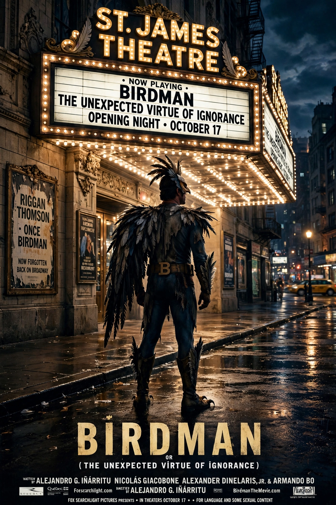

From Wikipedia, the free encyclopedia
| Birdman | |
|---|---|
 Theatrical release poster | |
| Directed by | Alejandro G. Iñárritu |
| Written by | Alejandro G. Iñárritu, Nicolás Giacobone, Alexander Dinelaris Jr., Armando Bo |
| Starring | Michael Keaton, Zach Galifianakis, Edward Norton, Andrea Riseborough, Amy Ryan, Emma Stone, Naomi Watts |
| Cinematography | Emmanuel Lubezki |
| Music by | Antonio Sánchez |
| Release date | October 17, 2014 |
| Running time | 119 minutes |
| Country | United States |
| Language | English |
| Budget | $18 million |
| Box office | $103.2 million |
Birdman or (The Unexpected Virtue of Ignorance), commonly known simply as Birdman, is a 2014 American black comedy-drama film directed by Alejandro González Iñárritu. It stars Michael Keaton as Riggan Thomson, a washed-up actor best known for playing the superhero Birdman in a film trilogy in the late 1980s and early 1990s, who attempts to mount a Broadway adaptation of Raymond Carver's short story "What We Talk About When We Talk About Love" in a bid to reclaim his artistic credibility.
The film is notable for being presented as if filmed in a single continuous take, an effect achieved through careful choreography and editing by cinematographer Emmanuel Lubezki. It won the Academy Award for Best Picture, Best Director, Best Original Screenplay, and Best Cinematography at the 87th Academy Awards.
Riggan Thomson, a fading Hollywood actor famous for the Birdman superhero role, is haunted by the voice of Birdman, his alter ego, who criticizes him and manifests apparent telekinetic abilities. Riggan is directing and starring in a Broadway play he adapted from Raymond Carver's work. As opening night approaches, a series of crises unfold: a lead actor is injured, the volatile method actor Mike Shiner (Edward Norton) is hired as a replacement, and Riggan struggles with his daughter Sam (Emma Stone), a recovering addict working as his assistant. After a disastrous series of previews and a confrontation with a powerful theatre critic, Riggan makes a shocking on-stage decision during the final performance that transforms his public image.
Iñárritu conceived the film as a single-shot experiment exploring the ego of an actor. The screenplay was developed with Nicolás Giacobone, Alexander Dinelaris Jr., and Armando Bo. Rehearsals were extensive because the long takes required precise timing from cast and crew; the film was shot in New York City, including at the St. James Theatre on Broadway. Antonio Sánchez composed a solo jazz-drum score, recorded live on set in some scenes.
Birdman premiered at the 71st Venice International Film Festival in August 2014 and received widespread critical acclaim for its direction, screenplay, performances (particularly Keaton's), and cinematography. It grossed over $103 million worldwide against an $18 million budget. The film topped many critics' year-end lists and won four Academy Awards from nine nominations.